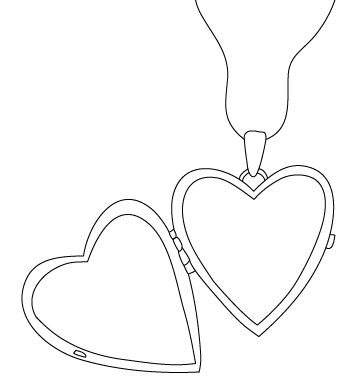

Sewing Kit
Locket
Lucky Rock
You have seen of 9 possible endings
The Journey Begins...
Hi !
Your grandparents own a dry-cleaning business, and it's your job to make deliveries each day when you come home from school. Today you and , your dog, are taking a delivery to Shinwha High School, the most prestigious and expensive private school in all of South Korea. As you rush out the door, you quickly grab your
, which you never leave home without. On the way you found out your cat, , hopped into your backpack! On the way out the door your pet lizard, , hops onto your shoulder to tag along. As you get closer to the school, you notice a crowd forming on the main building's roof. You climb to the top of the roof, and see that there is a lone boy on the very edge.
You start to whimper and are too afraid to move. He moves closer and closer to the edge, and despite your fear, you know you have to make a decision. You muster up the courage and a faint "h.. hey!" escapes your lips....
You approach the boy, and attempt to reason with him. "Hey, it's not worth it, why don't you come down and we can talk about this?"
You start shouting at the boy, "Hey, what do you think you're doing? You go to the best school around, what do you have to be unhappy about? Get down from there right now!"
You get closer, and just as you are near enough to reach out and touch him, he jumps!
Do you:
Media Frenzy!
You bid your mother farewell, and make one request...you want to take one of the large baskets of laundry she has back with you.
You arrive in the present day on the ground outside of the building, and look up and see the boy falling towards you. You put the basket down and he lands safely.
Wow you saved him! The crowd on the roof cheers at your heroics and barks enthusiastically at your side, while meows animatedly and bumps their head lightly against yours in congratulations. You go home, but unbeknownst to you, a Shinwha student filmed the whole thing, and uploaded it to the Internet! By the next day, everyone has seen it, and are clamoring for you to be rewarded, and for Shinhwa High School to be investigated for allowing such an incident to take place on their campus. Desperate for good PR, Shinhwa High School offers you an all-expense paid scholarship.
Do you:
Men in Black
Oh no , you didn't save him! As you watch him plummet to his death, two men in black suits appear from the crowd and yell "Why didn't you save him?!", and pull out their guns on you. Turns out the student who had just jumped off had bodyguards! Your dog starts barking angrily at the men and moves in front to protect you. Your cat hissed with their back arched and runs into a corner on the roof to hide. Your lizard presses itself down on your shoulder and changes color to match your shirt.
You feel ashamed at your lack of action, and attempt to plead with the body guards. "Please, I didn't know he would jump, don't hurt me!"
You feel scared but still attempt to reason with the bodyguards. "How could I have known he would jump? Hurting me won't solve anything..."
The sight of guns angers you. "Put those away! You were supposed to be guarding him you $%$@'s'"
Do you:
You reach the edge of the roof holding your dog. Scared, you see your life flash before your eyes and you prepare to die. But before the bodyguards can shoot you, a mysterious woman emerges from the crowd and pushes you off the roof. The last thing you see is looking worriedly at your from its corner.
You wonder why these things always happen to you, "Why?!"
You can't understand who the woman is or why she would push you off a roof. "Why have you done this?!"
Where did she come from? As you fall helplessly you yell at her, "How dare you! I'll get you for this!"
Trouble in the Hallway...
Congratulations you took the scholarship, you smarty pants! On your first day, you arrive early and excited to learn while your ever faithful dog tags along. A sudden commotion at the entryway to the school catches your attention, and you hurry over to see what is happening. Unfortunately, you trip, get an elbow to the stomach, and the gum that you were chewing is expelled, and lands... right in the hair of the most popular guy at school. He points at you, and says "You're dead meat."
Do you:
Time Warp
As you fall with your tiny dog in your arms, a sudden wrinkle in time opens, and you are transported back to 17th century Korea. You open your eyes to find you and your dog have landed on a pile of laundry. crawls out from under a robe near your head. Their skin matches the color of the elaborate robe. Somehow during the time travel your clothes have changed to be what 17th century Korean women wear. A man, mistaking you for a servant, demands that you clean the clothes you have landed on.
Agree to do what the man says, as his strange appearance and the situation have made you scared.
The entire situation is confusing to you, and you are temporarily unable to act rationally, "Um, fine...I'll do it."
The attitude of this strange man and the strangeness of the situation enrages you. "Why would I ever do anything for YOU!?" The man puts hs sword to your neck, and you decide to accept the situation...for now.
Turns out those are the king's royal garments. Using your dry-cleaning prowess, you clean them to perfection. Soon you become famous throughout the land for your skills. Then one night a strange lady arrives at your dwelling and demands you come with her. You recognize her as the woman on the roof who pushed you back in time.
Do you:
Mom???
You decide to go with the lady and she reveals to be your time travelling mom. She tells you that she was stuck in the 21st century and could only go back home to the 17th century by pushing you into it as well. You have mixed feelings about the reunion, but your lizard takes to your mom in no time, but your dog takes to your mom in no time. You think about what she went through, and realize maybe she made the right choice. Your mom tells you that she wants you to stay with her in this century. But you feel guilty about your decision to not save the boy on the roof, so your mom tells you that she can send you back to the 21st century, but you will never be able to come back to the 17th century.
Do you:
Double Dead-End
You refused the scholarship. You stay in public school, graduating in the middle of your class. You keep working at your grandparents' dry-cleaning business. A series of health issues with your grandma, your grandpa, and your brother force you to remortgage the business. They end up dying and you are left to run the business alone. Desperate, you turn to loan sharks, and they start hounding you to repay them. You have to sell your precious in order to get some money to pay back your debts. You attempt to reason with them to lower your interest rates, but they shoot you instead. Eventually, the constant harassment forces you to confront them, however the deal you attempt with a local gang to buy a gun goes bad when you get angry over the price, and they are forced to shoot you and hide the body. Scared, you increase your working hours to 20 hours a day. You die at 34, due to a stress-related illness. Your timid ghost haunts the earth for eternity, posessing people and making them slow down in the fast lane during rush hour, never getting up the courage to haunt anyone.
The End...or is it?
Dead-End
The bodyguards shoot you and you die. The bodyguards take pity on your dog and adopts them. The bodyguards take pity on your cat and adopts them. The bodyguards take pity on your lizard and adopts them.
The End...or is it?
$$Happily Ever After$$
After cursing him outcrying in embarrassmentreasoning with him, he realizes that he has never met anyone like you. You fall in love, get married right after high school, and get all the benefits of being married to a rich man. You live happily ever after.
The End...or is it?
Family Ties Inn the Joseon Period
You decide to stay with your mother in 17th century Korea and live happily ever after running a small inn with her. Seventeenth century life is tough, but you're with your mother!
The End...or is it?
Shark Week
You and your dog try to swim across the Yellow Sea, and you get eaten by a shark. You die, but your dog swims to safety.
The End...or is it?
My Monotonous Laundrette
The palace guards charge in to your room, and you think you hear the mysterious woman screaming "!" as she is dragged away, but it's too hard to tell. There's no way she could have known your real name, right? you wonder out loud to your dog You live out the rest of your life cleaning the King's laundry, occasionally thinking about how you ended up in the same occupation even after being transported to another time.
The End...or is it?
Lock(et) Down the Dynasty
The palace guards rush to the scene. After the mysterious woman is taken away, the captain of the guards notices your locket, and realizes it is the royal symbol of the Queen! You consider the locket, and think about how you've had it all of your life. Upon being recognized as the true heir to the aging King, you live out the rest of your days in luxury with at your side.
The End...or is it?
Working Class Heroine
After cursing him outyour crying stops the boy from harming you, he realizes that he has never met anyone like you. But then your sewing kit is jostled out of your bag by your cat, , who had stowed away in your backback again. This reveals that you are a simple working class girl, and the popular guy loses all interest and leaves. Better for you!
The End...or is it?
My Dad the Lizard
The bodyguards shoot you but your lucky rock stops the bullet and shatters. There's a glowing light on your left shoulder and your pet lizard jumps to the ground. begins to transform and turns into a middle-aged man. You recognize that man from the family portraits in your house... It's your missing dad! Turns out your dad is a descendent of royalty and well-known by the people at the school, and was trapped in the body of your lizard by an evil spell. He stops the bodyguards from shooting you. "Finally, the spell was broken when you broke that rock. I'm so glad to be back!" You throw your arms around him and exclaim, "thank you so much for saving me, ...oops...I mean...Dad." You share a laugh, and live happily ever after in a huge house with your family.